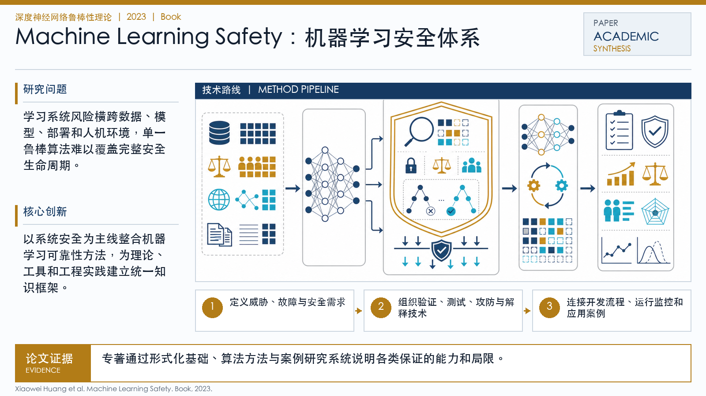

Problem
解决的问题
学习系统风险横跨数据、模型、部署和人机环境，单一鲁棒算法难以覆盖完整安全生命周期。
Robustness Theory of DNNs · 2023 · Book
Machine Learning Safety
Problem
学习系统风险横跨数据、模型、部署和人机环境，单一鲁棒算法难以覆盖完整安全生命周期。
Value
专著通过形式化基础、算法方法与案例研究系统说明各类保证的能力和局限。
Paper-grounded Academic Summary
该代表页依据原文摘要、贡献段与方法图注生成。方法视觉由 ImageGen 按论文证据逐篇绘制，中文研究问题、技术路线、创新点与实验结论采用确定性排版，以保证内容与字符准确。
打开原文 PDF
Technical Route
Innovation